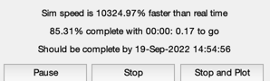
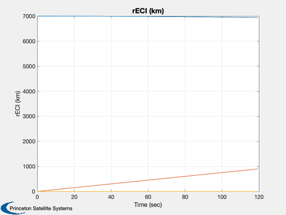
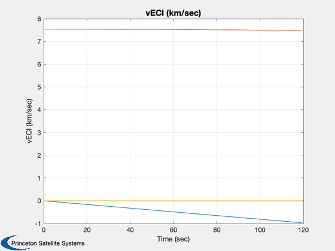
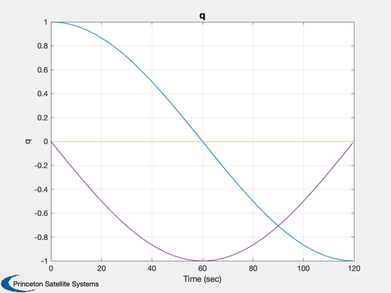
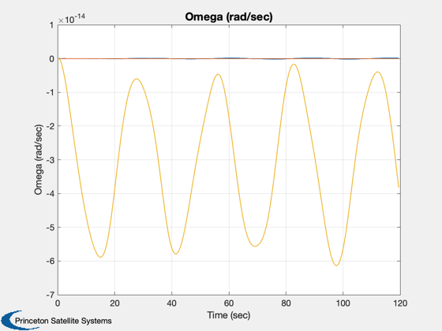
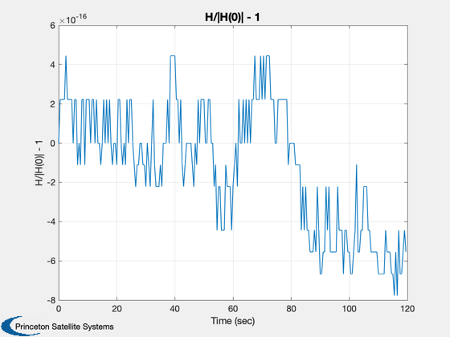
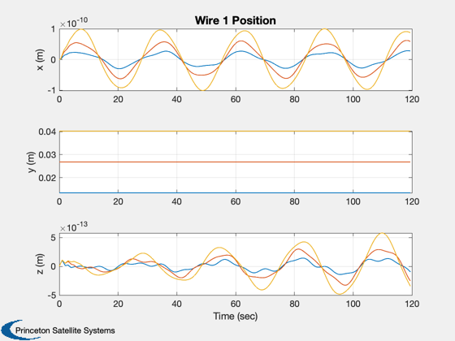
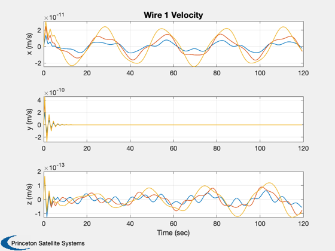
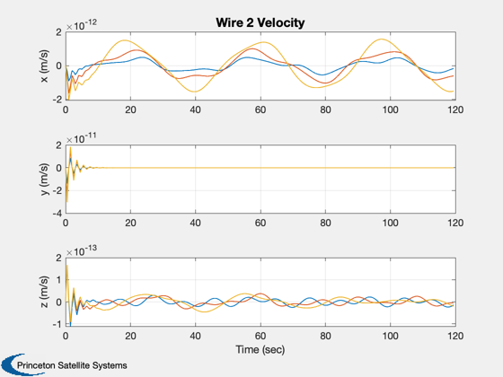
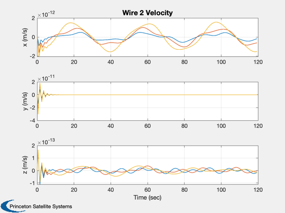

This script demonstrates the deployment of the wire from the spacecraft.
This model assumes that the center-of-mass of the spacecraft does not move as the wires deploy. The simulation models the wire as a string of masses connected by springs. Orbit dynamics and gravity gradient are included.
Since version 2. ------------------------------------------------------------------------- See also NPlot, Plot2D, TimeGUI, RK4, KConst, WireDMch, WireH, WireInit, WirePlot, WireDS -------------------------------------------------------------------------
Contents
%-------------------------------------------------------------------------- % Copyright 1997 Princeton Satellite Systems, Inc. All rights reserved. %--------------------------------------------------------------------------
Global for the time GUI
%------------------------- global simulationAction simulationAction = ' '; clear penalty;
Constants
%-----------
false = 0;
true = 1;
Simulation parameters
%-----------------------
tSim = 120.0;
dT = 0.125;
nSim = tSim/dT;
nPlot = min([tSim/dT 200]);
nPMax = floor(nSim/nPlot);
nPlot = floor(nSim/nPMax);
gGOn = false;
kConst = true;
Print the time to go message every nTTGo steps
%------------------------------------------------
nTTGo = 1000;
Spacecraft properties
%----------------------- mass = 800; % kg r0 = [0;0;0]; inertia = [104 0 0;0 107.8 0;0 0 125.4]; muEarth = 3.98600436e5;
Initial rigid body state
%-------------------------- rECI = [7000;0;0]; vECI = [0;sqrt(muEarth/7000);0]; omega = [0;0;0.5]*pi/30; q = [1;0;0;0]; torque = [0;0;0]; % On the central body force = [0;0;0]; % On the central body
The wire model. Each column is one wire
%----------------------------------------- nNodes = [ 3 3 ]; rWireBase = [0 0;0.6 -0.6;0 0]; lWireMax = [0.04 0.08]; massWire = [0.4 0.4]; kSpring = [ 3.0 3.0]; % Used only by WireFRB cSpring = [ 0.5 0.5 ]; % Used only by WireFRB cDeploy = cSpring; % Used only by WireFRB nodeDeploying = [ 0 0 ]; % To start undeployed set these to 3 vDeploy = [ 0.001 0.001 ]; % m/sec
Initialize the wire data structure
%------------------------------------ [wireDS, x] = WireInit( nNodes, mass, massWire, lWireMax, kSpring, cSpring, vDeploy,... cDeploy, nodeDeploying, rWireBase, rECI, vECI, q, omega,... r0, inertia, gGOn );
If using the kinematic constraints
%------------------------------------
penalty.alpha = 1e6;
penalty.mu = 1;
penalty.omega = 10;
penalty.nIts = 2;
Plotting arrays
%-----------------
xPlot = zeros(length(x),nPlot);
hPlot = zeros(1,nPlot);
tPlot = zeros(1,nPlot);
nP = 0;
kP = 0;
t = 0;
Initialize the time display
%----------------------------- [ ratioRealTime, tToGoMem ] = TimeGUI( nSim, 0, [], 0, dT, 'WireSimG' ); for k = 1:nSim % Display the status message %--------------------------- [ ratioRealTime, tToGoMem ] = TimeGUI( nSim, k, tToGoMem, ratioRealTime, dT ); % Plotting %--------- if( nP == 0 ) kP = kP + 1; xPlot(:,kP) = x; hPlot(kP) = WireH( x, wireDS ); tPlot(kP) = t; nP = nPMax - 1; else nP = nP - 1; end % Choose either the extensional stiffness or constrained wire models %------------------------------------------------------------------- if( kConst == true ) x = RK4( 'WireC', x, dT, t, wireDS, muEarth, torque, force, penalty ); else x = RK4( 'WireFRB', x, dT, t, wireDS, muEarth, torque, force ); end t = t + dT; [wireDS, x] = WireDMch( wireDS, x, t ); % Time control %------------- switch simulationAction case 'pause' pause simulationAction = ' '; case 'stop' return; case 'plot' break; end end
Output
%-------- dOmega = [xPlot(11,:) - xPlot(11,1);... xPlot(12,:) - xPlot(12,1);... xPlot(13,:) - xPlot(13,1)]; magH = abs(hPlot(1)); hPlot = hPlot / magH; j = 1:kP; tPlot = tPlot(j); Plot2D( tPlot, xPlot( 1: 3,j), 'Time (sec)', 'rECI (km)' ); Plot2D( tPlot, xPlot( 4: 6,j), 'Time (sec)', 'vECI (km/sec)' ); Plot2D( tPlot, xPlot( 7:10,j), 'Time (sec)', 'q' ); Plot2D( tPlot, dOmega(:,j), 'Time (sec)', 'Omega (rad/sec)' ); Plot2D( tPlot, hPlot(j) - 1, 'Time (sec)', 'H/|H(0)| - 1' ); WirePlot( xPlot(:,j), tPlot, wireDS ); fprintf('Max momentum change = %12.4e with dT = %8.4f and tSim = %8.4f\n',max(abs(hPlot-1)), dT, tSim) %--------------------------------------
Max momentum change = 7.7716e-16 with dT = 0.1250 and tSim = 120.0000      
 
